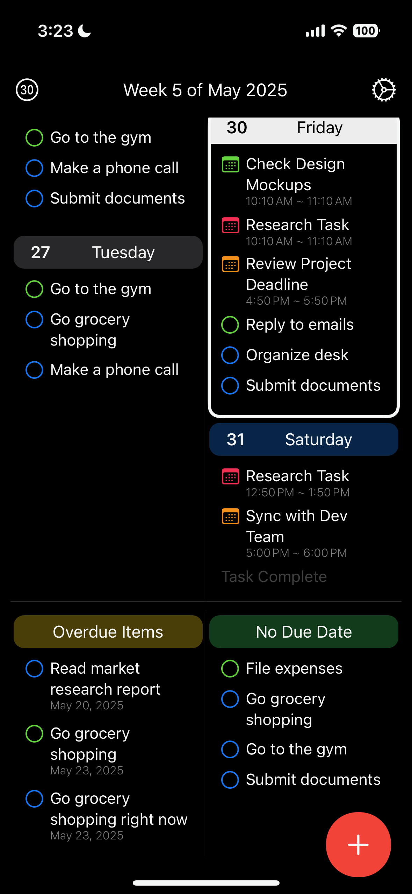
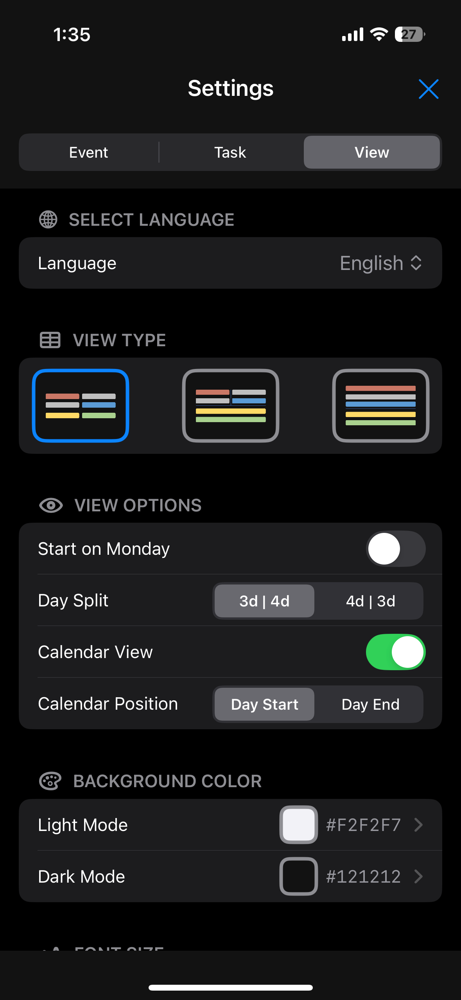

WeeklyTodo
주간 관점으로 삶을 정리하세요
WeeklyTodo는 직관적인 주간 뷰로 작업을 계획하고 추적하며 완료하는 데 도움을 줍니다. 학생, 전문가, 그리고 체계적으로 정리하고 싶은 모든 사람에게 완벽합니다.
주요 기능
주간 뷰
직관적인 주간 캘린더 인터페이스로 전체 주를 한눈에 확인하세요
작업 관리
우선순위 수준과 마감일이 있는 작업을 생성, 편집 및 정리하세요
간단한 노트 기능
할 일과 주간에 대한 간단한 메모를 빠르게 작성하세요
스케쥴 관리
주간 일정을 효율적으로 관리하고 중요한 일정을 놓치지 마세요
기한지난항목 관리
기한이 지난 할 일을 한눈에 보고 쉽게 관리할 수 있습니다
위젯
홈 화면에 위젯을 추가해 주간 할 일을 빠르게 확인하세요
기기 간 동기화
클라우드 동기화로 어디서든 작업에 접근하세요
맞춤 설정
테마와 레이아웃 옵션으로 경험을 개인화하세요
iOS 스크린샷




macOS 스크린샷